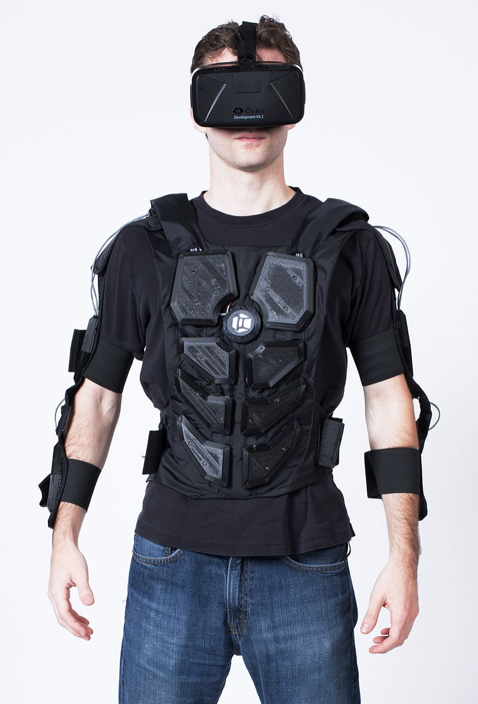

Student's Choice: bHaptics TactSuit
Overview
Virtual Reality has become very popular in the last few years as Virtual Reality gadgets are becoming cheaper and cheaper. They are also becoming more readily available for consumers as the smartphone industry is booming.
While the head-mounted displays and the motion-tracked controllers help gamers experience Virtual Reality quite well, it still only lets our head and hands interact with the virtual reality. Rest of our body is still in the real world which is quite restrictive when it comes to playing immersive games. While with the virtual reality gadgets use sight and sound to immerse us into the virtual world, other important sensations like touch and feel still remain in the real world. That may sometimes provide a broken experience.
This is where haptic suits shine. A haptic suit or a tactile suit or a gaming suit of a haptic vest is a wearable device that provides haptic feedback to the body. A haptic suit utilizes the sense of touch, vibration and physical contact. They can be small vibrations, like vibrations in the foot while walking or feeling the gunshot while being shot in an FPS game. NOW isn’t that being really immersive?
Presentation video and slides:
What is it?
bHaptics Tactsuit is a full body haptic suit for Virtual and Augmented Reality. It provides wearable devices for chest, arms, hands, feet and face. These wearable devices contain various tiny haptic feedback points that work by vibrating at different intensities to emulate different touch sensations. So either a slight vibration to indicate being touched, or a hard sharp one to feel being hit by a bullet. There are 70 such haptic feedback points available. It’s because of the wearable devices for so many different parts of the body that tactsuit provides such an immersive experience.
Each element contains many such motors and in combination they produce over 300 haptic patterns which is incredible. So now you can feel the bullet that hit your body in that game, or snakes swirling around your body, or hugs and handshakes that you share with your teammates.
The best of all, Tactsuit is completely modular. You can use all the components separately and one doesn’t require others. More devices just enhance your VR experience.
History:
Though haptic suits seem revolutionary, they aren’t some new technology and surprisingly have been around since the 90’s. Haptic Suits were first launched in 1994 by Aura Systems called the ‘Interactor Vest’. They used electromagnetic actuator technology to convert bass sound waves into vibrations to represent actions like a punch, kick, or a shot.

In 2002, researchers at the Interaction Design Institute Ivrea in Italy, designed the HugShirt that allowed to feel and send the feeling of a hug to a distant loved one. They used touch sensors and haptic actuators to work and recreate the touch.
In 2007, technology came closer to its current state when TNGames released the 3RD Space Vest. It uses contact points to simulate gunfire, body slams or G-forces associated with race car driving.
In 2016, a vest very similar to Tactsuit called NullSpace VR was developed that provided a full upper-body haptic feedback suit and gloves for tracking.
Finally, bHaptics introduced three products in 2017 which are vest (40 haptic points), a haptic mask and a haptic arm band with 20 haptic points.
Features and Specifications:
- Adjustable shoulder straps
- One size fits all
- 70 Haptic Feedback points
- 15hr+ hours battery life ( for vest, 36hsr+ for wearables of other body parts
- Supports 50+ games.
- 300+ haptic patterns
- Completely wireless.
- No latency.
Compatibility:
bHaptics Tactsuit are compatible with all modern headsets and even with PC. Following is a list of compatible headsets:- Oculus Rift
- Oculus Quest
- HTC Vive
- HTC Focus
- Steam VR
- PC and PC VR
- Samsung HMD Odyssey
Availibility:
The tactsuit and the individual wearable devices are available to purchase on their website (https://www.bhaptics.com/shop) and several other retail partners like Amazon.Applications:
Though currently haptic suits are mainly used for gaming, bHaptics Tactsuit can also be used in a variety of domains like:1. Gaming and entertainment: Tactsuit with its array of feedback to the user will be a great addition to the VR headsets for the immersive gaming experience.
2. VR therapy: With the vibration feedback and arms, hands and body, this can be used to provide physical therapy for the elderly.
3. Education: The haptic suits can be worn by children and experience being in the environment they are studying about.
4. Science and Engineering
5. Virtual Sports: There are already VR sport games. With the haptic feedback, this will only make the experience more immersive.
6. Health and fitness: The haptic suit can be used for light exercises.
7. Training simulations: The haptic suits with the appropriate feedback can be used for driving simulations and training, military, work environment. This provides a safer and cheaper alternatives for physical training.
8. Communication and Social media (like VR chat) and dating: With the ability to feel the touch, these can be a great use for social media VR applications like VR chat.
9. Healthcare: In emergency situations, doctors can wear these and perform minor operations as if they were present.
Pros and cons:
PROs
1.It provides an immersive experience for the entire body - chest, arms, hands, face, feet. From head to toe.2. It’s completely modular. So you can just purchase and use the components you want or need or can afford.
3. They are comparatively cheap for what they offer. The most recent tactsuit X16 starts from just $299.
4. It’s wireless.
5. It’s one size fits all which means it can be shared by multiple users.
CONs
1. Since Tactsuit includes component for face, people wearing glasses will struggle with them using the haptic mask.2. Though are a good amount of games supporting Tactsuit, there are still many games which don’t yet which can make this purchase expensive.
3. Privacy. The suit gathers a lot of data. The sensors record each and every movement of the user which can be used in a malicious way if not monitored.
4. These are still quite heavy to wear and aren’t comfortable in the long run. If this aims to be used by general public regularly, they need to make it more comfortable and like regular clothing.
Further reading and reviews: :
1. https://www.vrfocus.com/2020/01/ces-2020-interview-bhaptics-moves-towards-consumer-haptics/
2. https://skarredghost.com/2020/07/25/bhaptics-review-haptic-vr/
3. https://www.bhaptics.com/experiences/vr
4. https://www.newsbreak.com/news/2099224178526/bhaptics-tactsuit-x-haptic-feedback-vests-for-immersive-vr-gaming
5. https://www.vrone.co.uk/vr-accessories/haptic/bhaptics-tactsuit-review#:~:text=In%20terms%20of%20hardware%2C%20the,gameplay%20new%20and%20exciting%20again.